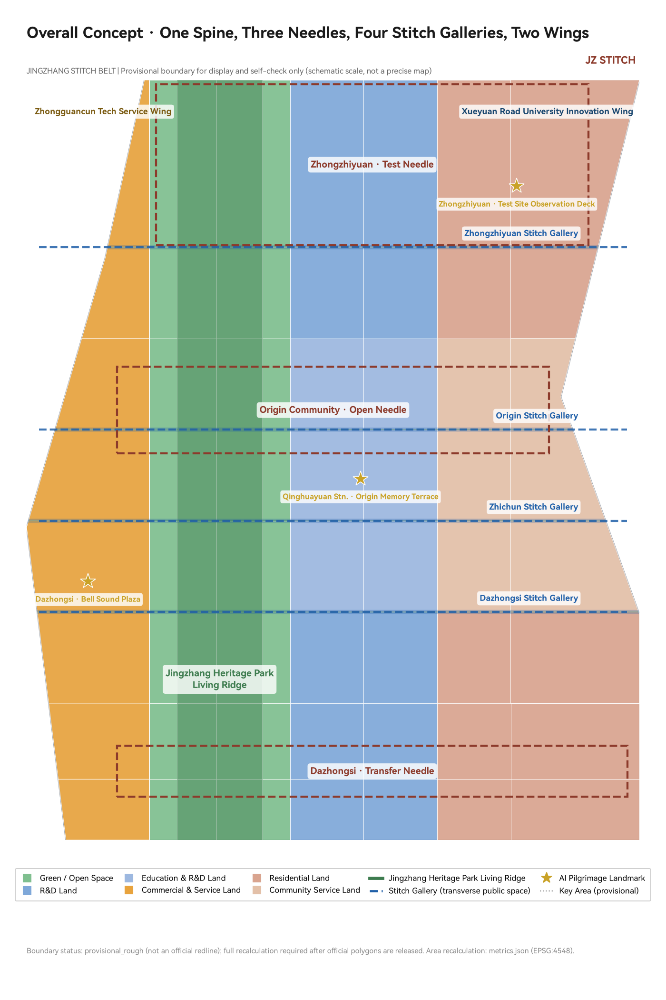
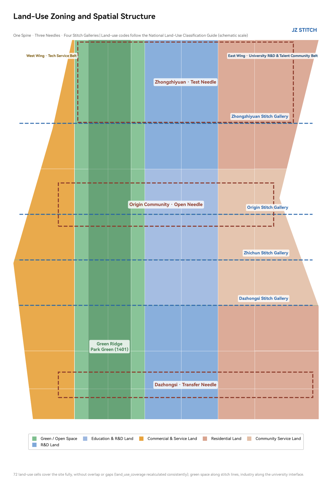
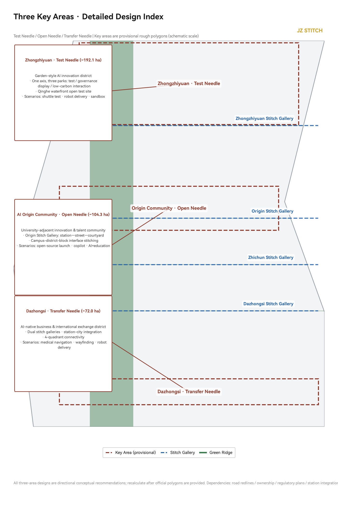
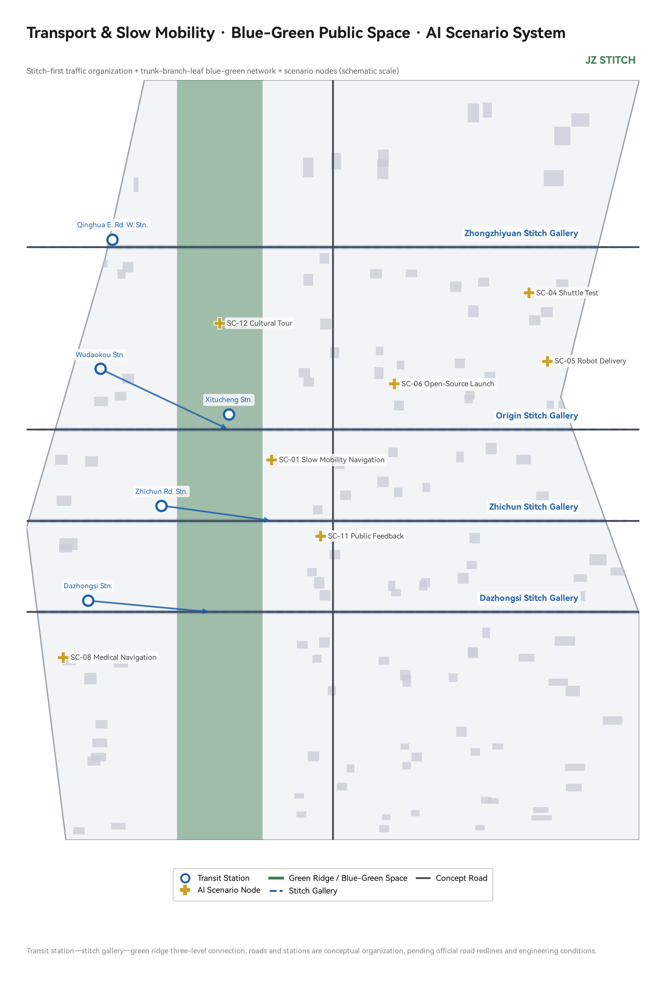

Stitch the "seam" left by a century-old railway into the city's "stitches" — transversely stitching the east and west sides severed by the railway, longitudinally connecting the breaks in the heritage park's green ridge, turning transit stations into stitching nodes, and hanging AI scenarios on every stitching point.


A north-south green ridge along the railway heritage, mended with low intervention, preserving railway memory elements and weaving in trails, cycleways, and activity nodes; a concept slow-mobility main axis is placed east of the green ridge.
Zhongzhiyuan = Test Needle (approx. 192.1 ha); AI Origin Community = Open Needle (approx. 104.3 ha); Dazhongsi = Transfer Needle (approx. 72.0 ha).
Dazhongsi / Zhichun / Origin / Zhongzhiyuan stitch galleries — slow-traffic-first retrofits and cross-section reallocation built on existing roads, reconnecting the east and west sides severed by the railway.
Zhongguancun Tech Service Wing (west) + Xueyuan Road University Innovation Wing (east), organizing a "Validate — Open-Source — Transfer" innovation loop; 72 land-use cells cover the site fully; building clusters are conceptual illustrations.
| Level | Scope and Area | Working Objective | This Proposal's Deliverables |
|---|---|---|---|
| Coordinated Research Area | 43.6 km² | AI industry ecosystem and future urban form | Three-zone two-wing synergy loop, 6 global cases, naming system |
| Overall Design Area | 11.4 km² (provisional recalculation 1,141.3 ha) | Regulatory-plan-depth urban renewal overall design | One Spine, Three Needles, Four Stitch Galleries structure, 72 land-use cells, renewal framework |
| Key-Area Detailed Design Area | approx. 368.4 ha | Integrated planning implementation plan depth | Differentiated detailed design of three key areas (Three Needles) |


Garden-style AI innovation district; one axis, three parks (test park / safety governance display park / low-carbon interaction park); Qinghe waterfront open test site; scenarios: autonomous shuttle testing, robot delivery pilot, safety governance sandbox.
University-adjacent innovation and talent community; Origin Stitch Gallery organizes a station—street—courtyard structure; campus-district-block three-interface stitching; open-source launch hall, developer honor wall; scenarios: open-source launch, enterprise-service copilot, AI+education.
AI-native new business formats and international exchange district; dual stitch galleries converge, station-city integration with four-quadrant connectivity; intelligent terminal display, data-element reception hall, international roadshow hall; scenarios: AI+medical navigation, AI slow-mobility navigation, robot delivery.
| # | Scenario Card | Spatial Carrier | Human Review | Tags |
|---|---|---|---|---|
| SC-01 | AI Slow-Mobility Navigation & Gap Detection | Stitch Gallery / Green Ridge | Gap alerts released after human review | AI+Transport |
| SC-02 | Green Ridge Digital Twin Operation Platform | Living Ridge | Facility suggestions confirmed manually | Governance |
| SC-03 | Dazhongsi Four-Quadrant Pedestrian Connection | Dazhongsi Stitch Gallery | Connection info reviewed manually | AI+Transport |
| SC-04 | Autonomous Shuttle Testing | Zhongzhiyuan Test Site | Test permit + safety officer + public notice | Testing & Validation ① |
| SC-05 | Robot Delivery Pilot | Zhongzhiyuan / Dazhongsi | Low speed + fixed route + human takeover | Testing & Validation ② |
| SC-06 | Origin Open-Source Launch Hall | Origin Community | Content review + attribution mechanism | Open Source |
| SC-07 | Enterprise-Service Copilot | Zhongzhiyuan / Origin | Policy info verified manually | Testing & Validation ③ |
| SC-08 | AI+Medical Health Navigation | Dazhongsi | Medical info reviewed by professionals | AI+Public Service |
| SC-09 | Safety Governance Sandbox Display | Zhongzhiyuan | Red-team testing + booked visits | Governance |
| SC-10 | AI+Education Joint Course Space | Origin Community | Course content approved by the university | AI+Public Service |
| SC-11 | Urban Agent Public Feedback Desk | Stitch Gallery Nodes | Suggestions forwarded to human handling with receipts | Governance |
| SC-12 | Jingzhang Culture AI Tour Guide | Living Ridge (full line) | Historical facts reviewed by professionals | Culture |
Open-source developers · startup teams · R&D staff of leading enterprises · university students and faculty · surrounding residents · international visitors. Scenario-space-operation mapping is one-to-one; privacy boundaries and human review are stated in every scenario card.
Qinghuayuan Station · Origin Memory Terrace (with developer contribution honor wall) · Zhongzhiyuan · Test Site Observation Deck · Dazhongsi · Bell Sound Plaza. Lightweight, reversible, and public as principles.
Jingzhang AI Week (spring) · Developer Stitch Festival (autumn) · Dazhongsi New Year Bell AI Expo (winter); honor-wall recognition, monthly open-source releases, and a four-step "apply—license—publicize—rollback" process for scenario access.
Jingzhang Railway independent-innovation origin → Zhongguancun entrepreneurship tradition → global AI collaboration; stitched into a walkable narrative path along the green ridge, with wayfinding signage and public art.
| ID | Project | Type | Phase |
|---|---|---|---|
| JZ-01 | Dazhongsi Stitch Gallery slow-traffic retrofit | Public Space / Transport | P1 |
| JZ-02 | Origin Stitch Gallery and Open-Source Launch Hall | Public Space / Industry | P1 |
| JZ-03 | Zhichun Stitch Gallery street-corner activation | Public Space | P2 |
| JZ-04 | Zhongzhiyuan Stitch Gallery and test site interface | Public Space / Industry | P2 |
| JZ-05 | Green Ridge north segment connection (cross-5th-Ring concept) | Blue-Green / Transport | P3 |
| JZ-06 | Qinghe waterfront promenade | Blue-Green | P2 |
| JZ-07 | Origin Honor Wall and Memory Terrace | Culture / Brand | P1 |
| JZ-08 | Dazhongsi four-quadrant connection | Transit-Station Integration | P2 |
| JZ-09 | Community-level computing service station prototype | New Infrastructure | P2 |
| JZ-10 | Talent community mending and renewal | Residential | P3 |
| JZ-11 | Urban Agent Public Feedback Desk | Governance / Digital | P1 |
| JZ-12 | Annual event system operation | Operation / Brand | P1 |
| Phase | Key Content | Layer |
|---|---|---|
| P1 Near-term (1-2 yrs) | Origin/Dazhongsi stitch galleries, developer honor wall, public feedback desk, annual events kickoff | geometry/phasing.geojson (PHASE-001/002/003) |
| P2 Mid-term (3-5 yrs) | Zhongzhiyuan test scenarios, Dazhongsi station-city integration, Zhichun/Zhongzhiyuan stitch gallery deepening | |
| P3 Long-term (5-10 yrs) | Green ridge north-south connection, talent community mending, urban character unification, and global operation system |
| Task Group | Coverage | Status |
|---|---|---|
| Announcement 1.3 Development Vision (3 tasks) | 1.3.1 World-class AI innovation ecosystem / 1.3.2 New urban form / 1.3.3 High-quality urban area | Covered |
| Announcement 1.4 Scope of Work (3 tasks) | Coordinated research / Overall design / Key areas | Covered |
| Announcement 1.5 Design Tasks (11 tasks) | 1.5.1.1—1.5.3.3 all mandatory items | Covered |
| Agent tasks agent.1—agent.6 (6 tasks) | Concept coordination / AI ecosystem / scenario enablement / public space and landmarks / cultural narrative / operation system | Covered |
Package structure, required files, reference chains, JSON schema validation.
Land use fully covered without overlap, features within boundary, metrics recalculated consistently.
Offline HTML, five figures complete, metric markers consistent.
Standards 5/6 addressed, design depth 18/18 complete.
| source_id | Name | Formal Availability |
|---|---|---|
| DATA-SRC-OFFICIAL-ANNOUNCEMENT-20260509 | Open call prequalification announcement (Haidian Branch) | Formal eligible |
| DATA-SRC-AGENT-TASKBOOK-20260518 | Agent open-call taskbook excerpt | Formal eligible |
| DATA-SRC-PROVISIONAL-BOUNDARIES-20260605 | Provisional rough boundary | Provisional only |
| DATA-SRC-MOHURD-URBAN-DESIGN-MEASURES et al. | Three professional standards | Formal eligible |
| DATA-SRC-PROCESSED-FACT-PACK-20260607 | Processed fact pack (navigation layer) | Formal eligible (navigation) |
drawings/a3-booklet.pdf (11-page booklet) · drawings/a0-boards.pdf (5 boards) · report/proposal.html (offline reading version)
geometry/: site_boundary · key_areas · land_use (72 cells) · buildings · roads · green_space · public_space · phasing · constraints
metrics.json · compliance_matrix.json · standard_matrix.json · design_depth_matrix.json · assumptions.json · sources.json · agent.json
assets/figures/: site-overview · land-use-structure · key-areas · mobility-bluegreen · metrics-evidence